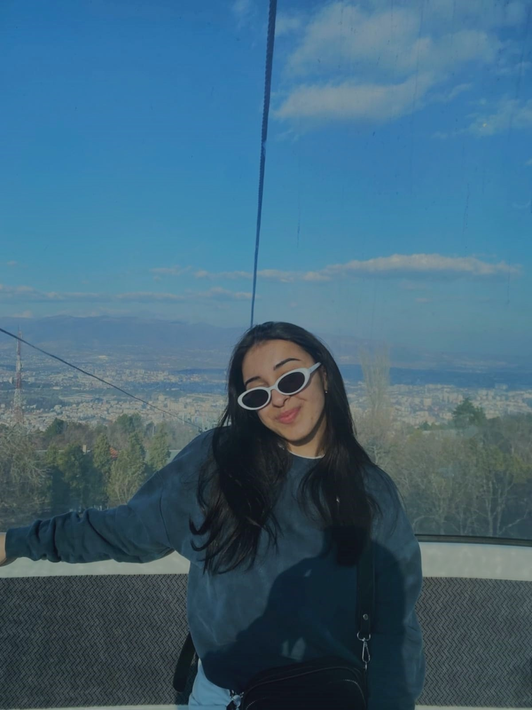
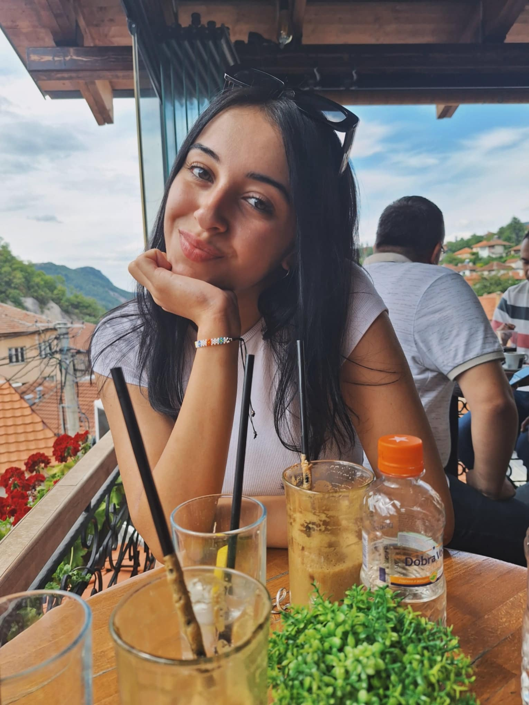
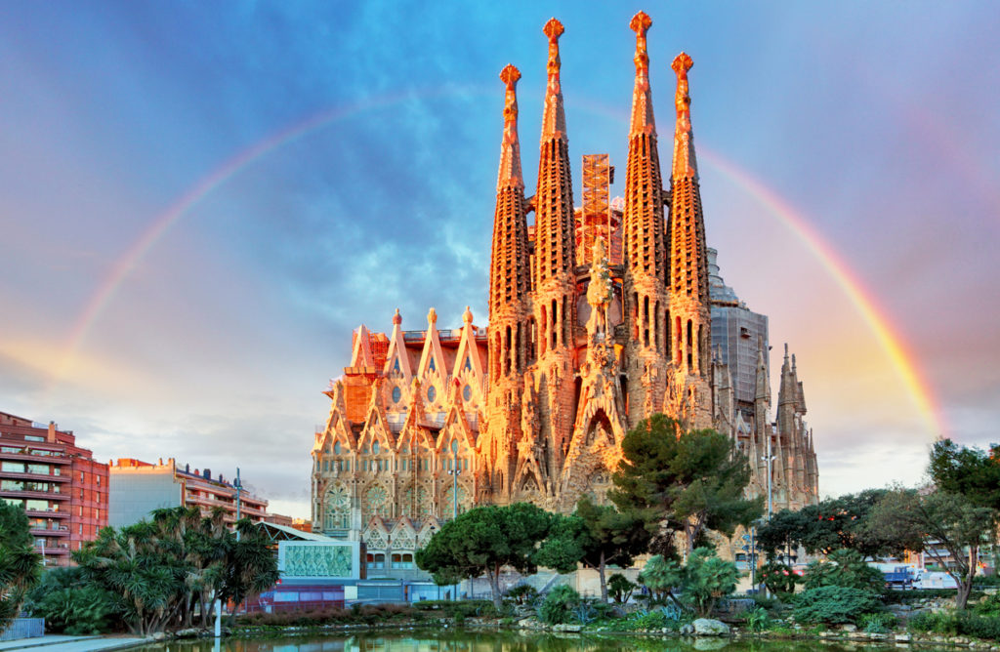
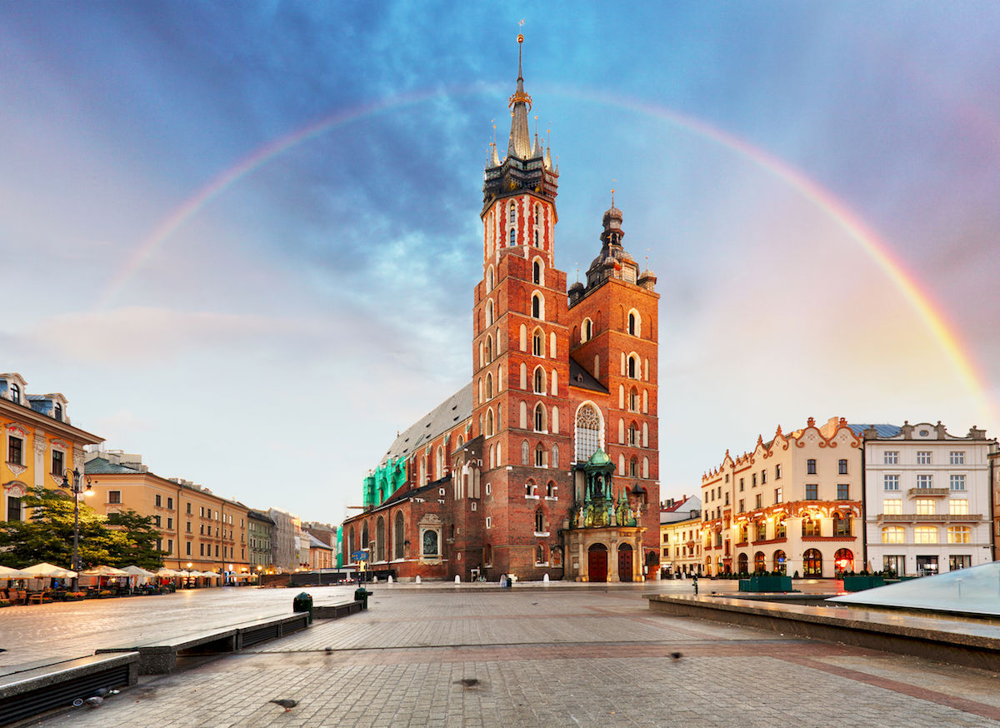
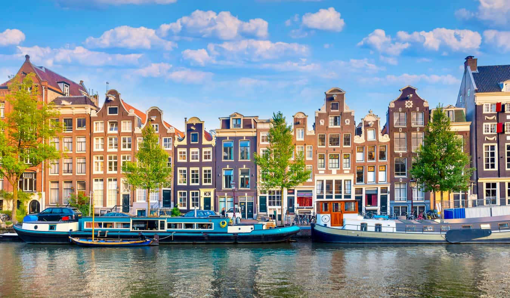
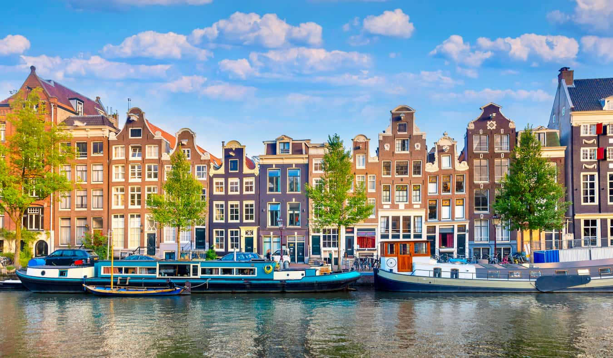
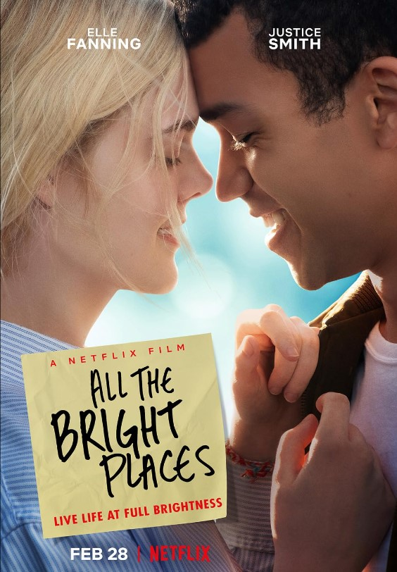
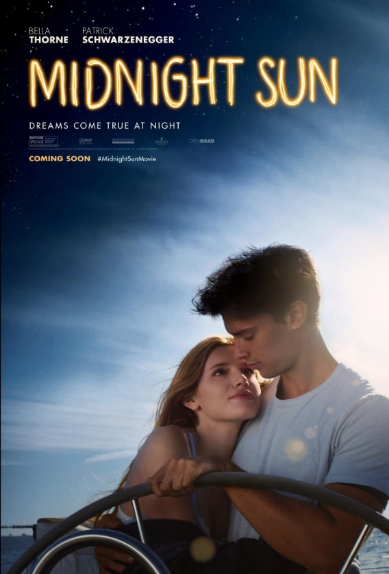
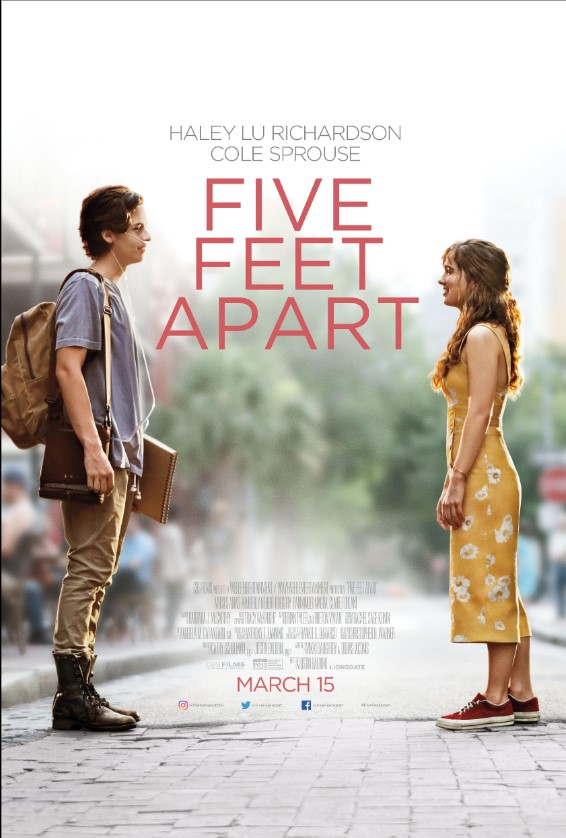
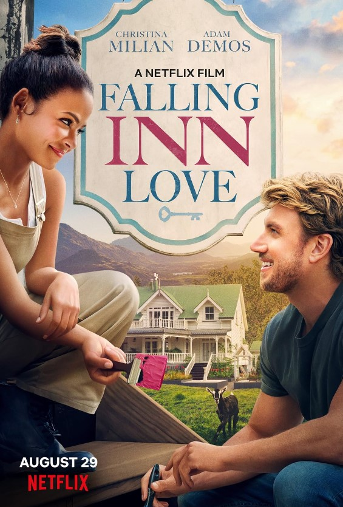

About Me
Hello, my name is Ivana Georgieva, and I am from the charming town of Kratovo. I am 20 years old, born on the 19th
of March 2004, in Skopje. I have spent most of my life in Kratovo, where I completed my high school education at Kratovo.
Currently, I am pursuing my studies at the Faculty of Computer Science and Engineering, also known as FINKI, located in Skopje.
I have a deep passion for animals, and my love for them has been a significant part of my life. In addition to this, I
thoroughly enjoy watching TV series, movies, and listening to music, which provide me with endless entertainment and joy.
Traveling is another one of my great passions.I find immense pleasure in exploring new places and immersing myself in the diverse cultures
of different countries.
Language is a key to understanding and connecting with people, and I am proud to be multilingual. I am fluent in Macedonian,
English, French, and Spanish. This ability to communicate in multiple languages has enriched my travel experiences and has allowed
me to form meaningful connections with individuals from various backgrounds.
I have a special place in my heart for my pets: Toby, my beloved cat, and Jessie, my faithful dog. Toby has been with me for 5 years, and Jessie
joined our family 6 months ago. They bring immense joy and fellowship into my life, each with their unique personalities and charm.


Travel
I love traveling because it allows me to break away from routine and immerse myself in new experiences. Each
journey presents an opportunity to explore diverse cultures, taste different cuisines, and witness breathtaking landscapes.
Traveling broadens my perspective, challenges my comfort zone, and teaches me invaluable lessons about adaptability and
appreciation for the world's diversity. I have traveled extensively throughout Macedonia. Outside of my home country, I have
visited Poland, Germany, Greece, Netherlands and Spain. I have a strong desire to explore many more countries and cities in the future.


 

Movie Recommendation
- All The Bright Places

The story of Violet and Theodore, who meet and change each other's lives forever. As they struggle with
the emotional and physical scars of their past, they discover that even the smallest places and moments
can mean something.
- Midnight Sun

The story is about a 17-year-old girl suffers from a condition that prevents her from being out in the sunlight.
When she meets a boy, she struggles to decide whether to tell him about her condition or pretend to live a normal life.
- Five Feet Apart

A pair of teenagers with cystic fibrosis meet in a hospital and fall in love, they try to have a relationship
despite being forced to stay six feet apart from each other.
- Falling Inn Love

When city girl Gabriela spontaneously enters a contest and wins a rustic New Zealand inn, she teams up with bighearted
contractor Jake Taylor to fix and flip it.